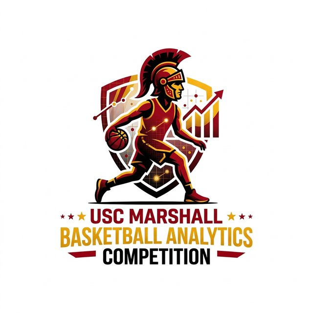

A national competition for graduate analytics talent. Teams turn live NBA game data into an interactive tool that helps coaches and executives make better decisions during the game.
Organized by the University of Southern California, Marshall School of Business · Supported by the MS in Business Analytics (MSBA) Program

The USC Marshall School of Business is proud to host the inaugural 2027 MSBA Sports Data Analytics Competition. This national event brings together top quantitative graduate talent for a sports analytics competition focused on basketball and live in-game data from the NBA.
Our goal is to bridge academic excellence with elite front-office and coaching decision-making, connecting the nation's leading analytical talent with active sports executives on a globally broadcast platform.
Los Angeles is a global sports hub, home to 12 major professional teams across the NBA, WNBA, MLB, NFL, MLS, NWSL and NHL, along with top collegiate programs at USC and UCLA. That makes Southern California a natural home for sports analytics innovation.
The prompt is deliberately open-ended. Coaches and executives work under intense time pressure, so the deliverable is not a slide deck or a report. It is a single live dashboard or interactive visual that someone on the bench can understand at a glance.
Create an analytics solution (live dashboard or graphic) that can help coaches or basketball executives make actionable decisions during a game.
The full case prompt and the competition dataset are released at the virtual kickoff on January 25, 2027.
How well are players making decisions at any point in a game, and what separates a high-quality decision from a low-quality one in that context?
How well are the players on the court performing, and when is the best moment to sub them out before efficiency, defense or shooting drops off?
How likely are active players to commit a foul given the matchup, pace, court location and time remaining, and how should that shape rotations?
Teams may choose any other impactful in-game problem, as long as it turns data into a coachable, real-time action.
A distinguished panel of faculty, sports analytics professionals and industry leaders scores every submission on four criteria.
Does the tool recommend or clearly enable a specific tactical move, such as calling a timeout, making a substitution, shifting defensive coverage or changing shot selection?
Can a coach or executive grasp the core takeaway within seconds? Is the design clean, intuitive and disciplined?
Could this decision realistically be carried out during a live, fast-paced game?
How well engineered is the code, how sound is the underlying logic, and how convincingly can the team explain and defend it to the judges?
Teams may use modern AI tools, including LLMs, coding assistants and design tools, to build and refine their solutions. Judging focuses on the quality and clarity of the tool you create and your ability to explain, justify and defend your design and analytical choices. AI speeds up the work; it doesn't replace sound strategic and statistical reasoning.
All times are Pacific. The build window is a focused two-week sprint from case release to submission.
Expression of interest opens for invited institutions.
Schools confirm participation and submit locked rosters (1–2 teams of 4–5 students).
The official case prompt and play-by-play datasets are released at the live virtual tip-off.
Case and technical clarification for registered competitors.
Midday technical and modeling Q&A.
Submit your live demo URL and GitHub repository. Repositories lock: no commits after this point.
The top 3–5 teams are invited to the live finals broadcast.
Finalists test their audio and video setup; live tool deployments lock.
Finalists demo their tools live and take questions from the judging panel, streamed on Zoom Webinar and YouTube.
Highlights from the official rulebook.
Graduate students currently enrolled in business analytics, data science, sports analytics, MBA or related quantitative programs at invited institutions. Teams of 4–5 students; each institution may nominate up to 2 teams. Rosters lock January 13, 2027, with substitutions only in extreme circumstances approved by the committee.
No updates, pushes or commits are allowed between the submission deadline (Feb 7, 11:59 PM PST) and the final presentations. Commits timestamped after the deadline lead to point penalties or disqualification.
For Round 1 blind evaluation, your live tool must contain no school names, school colors, school logos or student names. Identifying marks result in immediate point deductions.
Use only the competition dataset. Scraping or blending in outside data is not allowed. You're free to filter, aggregate, engineer features and model any subset of the provided data.
Submit your live demo URL and GitHub repository link through the official competition portal. Repositories may be public, or private and shared with the committee's judging accounts.
| Up to 12 hours late | −15% |
| 12–24 hours late | −30% |
| Over 24 hours late | Not accepted |
This is an invitation-based competition. Institutions indicate their intent to participate through the expression of interest form, and organizers follow up with verified registration links so school leads can confirm student rosters.
Students: to compete, contact your department chair, MSBA/MBA faculty director or sports analytics club president to coordinate your school's nomination.